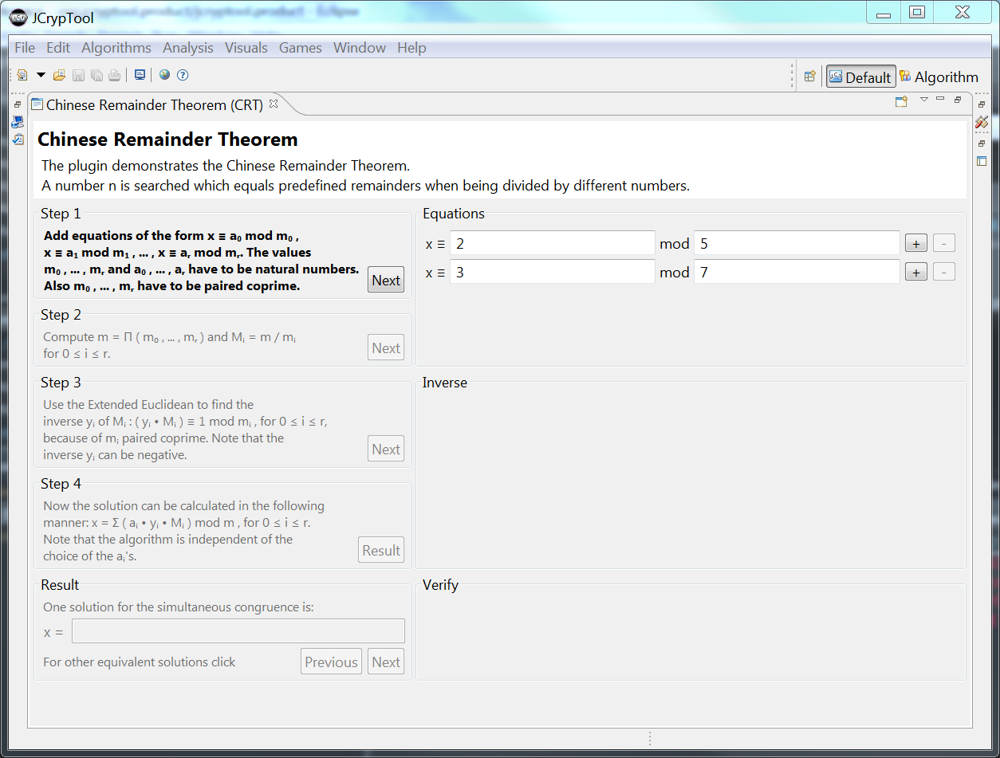

This plug-in shows the functioning of the Chinese Remainder Theorem (CRT).
The CRT algorithm itself is explained here.
The CRT plug-in can be started on the menu Visualization. Its view can be maximized, and with the Restart icon (in the upper right) its content can be set to the initial state.

The plug-in consists of two columns: On the left side the computational procedure of the steps is explained, and on the right side the input and results of the current calculation are shown. In the Equations group on the right side of the plug-in the parameters of the equations can be entered.
Whole, positive numbers (integers) of any size can be used. By pressing the + button, the number of the equations can be increased, and the number can be reduced by the pressing the - button. The minimum number of equations is two. After determining the number of equations and entering the parameters, you can move to the next step by pressing the Next button.
If the input parameters of the equations were not correct, a dialog box opens.
In this dialog box, the user has the possibility to correct his input themselve or to allow the program by clicking the button Suggestion to propose a valid value. In both cases the user has to confirm with the Apply button. With the OK button the user returns to the program and the dialog box closes. The group Step 2 is activated and the according description of the computational procedure is emphasized.
The user can now move on to the third step by pressing the button Next. In the group Inverse the intermediate results of the calculations are shown. The accompanying explanation has previously been given in the Step 2 group.
Group Step 3 describes the calculation of the inverse element.
The next step (Step 4) is also presented in the Inverse group.
The calculation of the final result is described in the last step, Step 4.
By pressing the button Result, the final result can now be displayed in the group Verify.
For the user to verify the accuracy of the solution all the equations are shown again in the Verify group.
The user can display further solutions of the simultaneous congruences by clicking the two buttons Next and Previous. The solutions are shown in the Result group as well as in the Verify group. To initiate a new calculation, it is sufficient to click in the Equations group on the + or - button. This performs a reset of all the input fields besides the ones in the Equations group, and you can add or remove other equations. This reset is possible from any step.
After passing through the algorithm, it is possible to export the calculations. The plug-in supports the output as LaTeX or CSV file. The buttons for exporting can be found in the top right corner of the plugin.